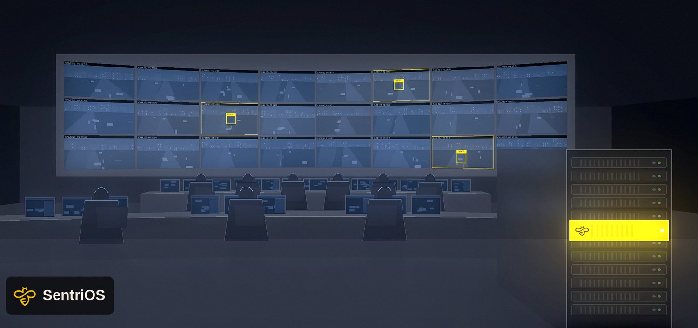
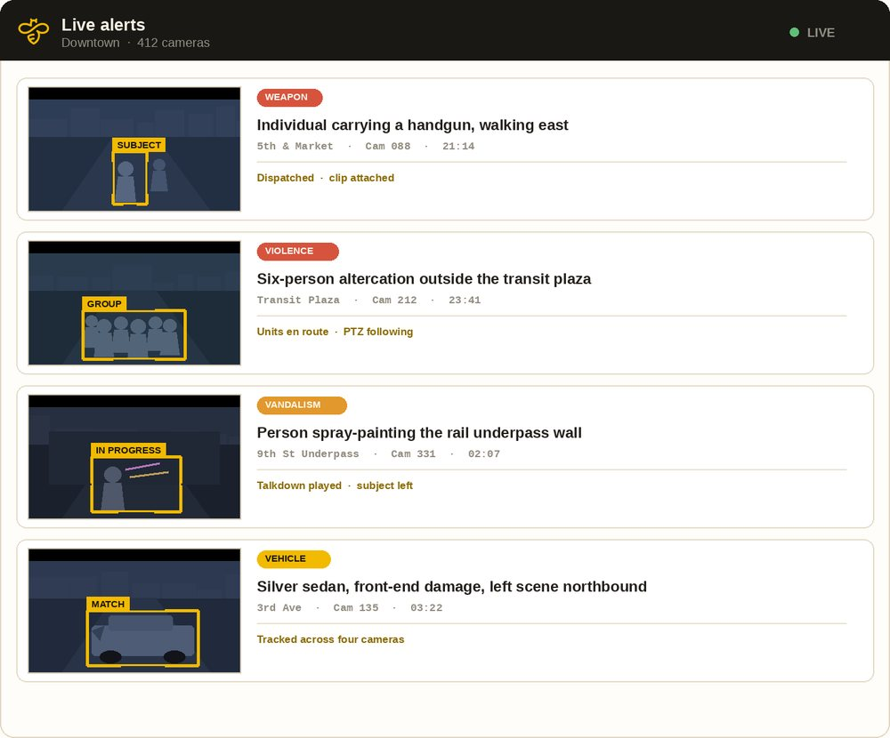
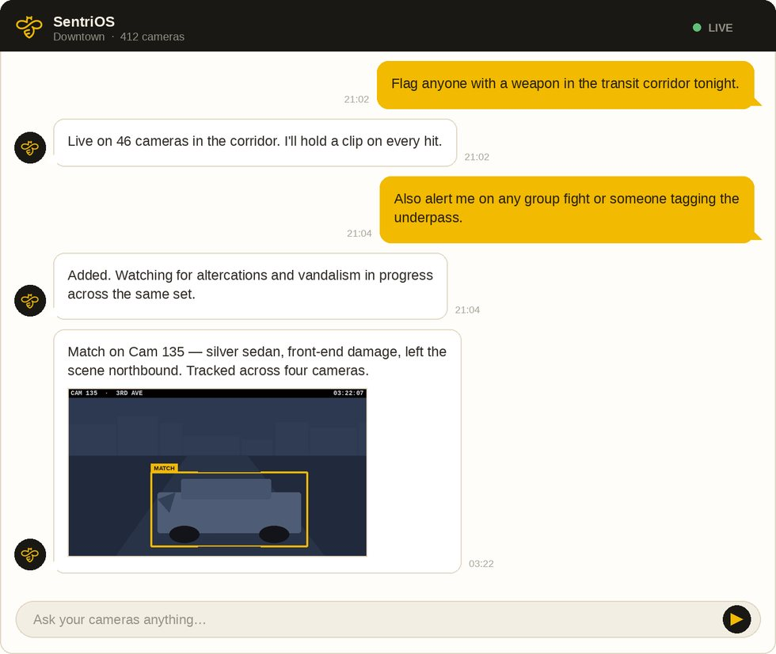

Machine attention on every feed, all night.
Whether you already run a 24/7 real-time crime center or you are just standing one up, SentriOS puts an agent on every camera you already have. It reasons about what is happening — a weapon in a corridor, a fight outside a venue, someone tagging an underpass, the vehicle that left the scene — and brings your analysts the incident with the clip attached. Fully on-premises, underneath the tools your team already uses.

Wherever your center is today.
Whether you are just starting to put your RTCC together, or you already have sophisticated technology in place, the constraint is the same — people to watch it. That is the part we add.
You have the room. You need the hours.
Your analysts already carry hundreds of feeds, ALPR hits and VMS alerts on rotation. Coverage is capped by how many people are on shift, not by how many cameras you own.
- Extend to true 24/7 without a hiring cycle
- Cut the nuisance alerts your team has learned to discount
- Put every camera under watch, not just the wall
- Free specialists for the calls that need judgment
You are building. Open with capability.
Standing up a center is a staffing problem before it is a technology problem. You can bring cameras and integrations online in a quarter; you cannot train a watch floor that fast.
- Go live with real capability on day one, not year two
- Start with the cameras and systems you already have
- One or two people can run a center that watches everything
- Document outcomes to support the case for growth
“If you don’t have the sensors, you don’t have the cameras, you don’t have the license plate readers, that room is not going to have anything to plug into.”
Lt. Raymond Diaz, Miami Beach PD — on the department’s first year running its Real Time Intelligence Center, NRTCCA 2026Everything is connected. The work still lands on people.
Feeds aggregate into Fusus, FlockOS, CommandCentral or a VMS, dispatch runs on Tyler, Mark43, Hexagon or CentralSquare, and it all lands on one pane of glass. Four problems survive that integration — and they are the four that consume the room.
Alarm fatigue
VMS analytics and ALPR hits fire on every person, plate and shadow. Analysts learn to discount the stream, and the alert that mattered dies inside it.
With SentriOS. Context decides. A badged crew at 5 AM is not an alert; the same figure at a cable vault on a Sunday is. Under 5% false alarms after tuning.
Coverage between calls
On-demand centers open the map when a 911 call drops. Between calls, hundreds of cameras record with nobody watching them live.
With SentriOS. Every feed is watched continuously — no rotation, no fatigue, no camera that nobody happened to be on.
Video search
Case building means scrubbing hours across dozens of feeds. Attribute search still requires you to know what you are looking for before you start.
With SentriOS. Ask in plain language — “what happened on 3rd between 2 and 4am?” — and get the answer with the clip.
Reporting
One incident package means pulling clips from several cameras, sequencing them by hand and typing the narrative into RMS from memory. Hours, every time.
With SentriOS. Every detection is explainable, time-stamped and video-backed — a record you can hand to the DA or your oversight board.
You cannot put public safety on a menu.
Analytics products ask an analyst to declare in advance what the software should look for. Public safety is defined by the events nobody declared.
- Pick detectors from a fixed list — person, vehicle, gun, trespass, loitering
- Blind to anything that was not configured in advance
- Stateless: every frame judged on its own
- New scenarios need a vendor ticket, a model and a release
- Output is an alert
- Describe the situation in plain language; the agent compiles it into a live watch
- Handles the unforeseen — a fight, a crowd surge, an abandoned bag
- Carries memory and context across time, cameras and prior incidents
- New use cases go live in seconds, across any subset of feeds
- Output is a decision, the clip, and the reasoning behind it
Detectors answer “is there a person?” · SentriOS answers “is this a problem, and what should happen next?”
Not a detector list. An understanding of what public safety means.
Because the agent reasons about the scene rather than matching a class, the same deployment covers events you never configured — and your team can add new ones by typing them.
Our agents also read plates on the cameras you already own — no dedicated ALPR hardware, no separate camera line. Every fixed, PTZ or trailer camera in the network becomes a potential plate reader, and a vehicle of interest can be described in plain language rather than matched against a hotlist alone.


Your analysts set the watch. By typing it.
No rule builder. No detector list. No vendor ticket and no release cycle. An analyst describes what matters tonight, the agent compiles it into a live watch, and it runs across one camera or thirty.
- Follow a subject across the network. Hands a person or vehicle from feed to feed and keeps the thread as they move.
- Drive the PTZ. Pans, tilts and zooms to resolve an ambiguous scene without an analyst touching it.
- Learn what is noise here. Every correction tunes your site; last month’s nuisance stops paging you.
- Answer like a colleague. Ask what happened on a block between two times and get the answer and the clip.
Analysts stay inside the loop. This is not a black box that emits verdicts — every conclusion is explainable and backed by video.
Runs inside your network. Nothing leaves.
SentriOS is a single GPU server in your rack, sitting underneath the tools your analysts already use. We size and spec it for your camera count and work with your IT to procure — the agency owns the hardware.
On-premises, full stop
One GPU server inside your network. Air-gap capable. We size and spec it; the agency owns the hardware.
Sits under your stack
Plugs into the VMS and aggregation layer already carrying your feeds. No rip-and-replace, no camera swap.
No cloud, no egress
No video, metadata or model traffic leaves the network. Your evidence stays inside your control.
Built to clear review
SOC 2 compliant and built to pass departmental security testing. Every detection explainable and video-backed.
Works with the systems your center already runs.


Plus Axon Fusus, FlockOS, CommandCentral Aware and Citigraf, alongside CAD and RMS platforms including Tyler, Mark43, Hexagon and CentralSquare.
All trademarks are the property of their respective owners.
Start with what you already have.
The centers that grow fastest do not begin with a purchase. They begin with the cameras and systems already in place, prove the value on real calls, and document it.
Inventory
Share your camera, VMS and aggregation inventory. We map the agent layer onto what you already run.
Scope
Pick a corridor, a district or the highest-nuisance feeds. Choose the situations that matter tonight.
Deploy
One GPU server, sized with your IT, inside your network. No camera swap and no cloud dependency.
Document
Every detection is logged, explainable and video-backed — the record that supports the case for growth.
Put an agent on every camera.
A 30-minute working session — bring your camera, VMS and aggregation inventory, and we will map the agent layer to what your center already runs.